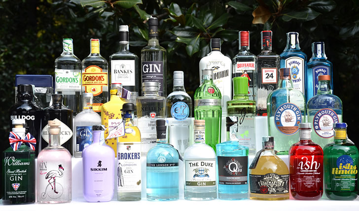

«ДИКИЙ ЗАПАД»
Требуется: 300 г сыра, 300 г консервированной кукурузы, 100 г миндаля, 200 г любого фруктового йогурта.
Способ приготовления. С кукурузы слейте сок, выложите ее в стеклянную посуду. Миндаль пропустите через мясорубку и добавьте его в кукурузу вместе с сыром, нарезанным маленькими кусочками. Заправьте блюдо йогуртом и перемешайте. Можете по желанию добавить 1/2 стакана апельсинового сока.
«МОРСКОЙ БРИЗ»
Требуется: 350 г замороженных креветок, 500 г свежей спаржи, 5 ст. л. сливок, 3 ст. л. майонеза, сок одного лимона, 1 яблоко, несколько листьев свежего горчичного салата, 1 ст. л. мелко нарезанных листьев базилика, 2 ч. л. сахара, соль.
Способ приготовления. Креветки разморозьте, слегка отварите в чуть подсоленной воде и мелко нарежьте. Яблоко очистите от кожуры и нарежьте кубиками. Спаржу отварите до мягкости, остудите и нарежьте полосками. Смешайте все перечисленные компоненты и поставьте в прохладное место на 30 минут.
Сливки смешайте с майонезом, добавьте сахар, соль, сок одного лимона. Листья салата тщательно промойте и разложите на блюде. Сверху на салат выложите креветки, спаржу и яблоко, положите сливки, смешанные с майонезом, сахаром, солью и лимонным соком. Украсьте блюдо зеленью базилика и сбрызните лимонным соком.
«ЗАКАТНОЕ СОЛНЦЕ»
Требуется: 300 г консервированных крабов, 1 зубчик чеснока, 4 ст. л. воды, 1 сладкий болгарский перец, 1/2 ч. л. лимонной цедры, 1 ст. л. грейпфрутового сока, 1 ст. л. крахмала, несколько веточек французской петрушки.
Способ приготовления. Крабы и красный перец нарежьте тонкими полосками. Налейте в кастрюльку воду, положите в нее нарезанных крабов, измельченный чеснок, перец и варите на слабом огне в течение 5 минут.
Затем выложите шумовкой крабов, чеснок и перец, а жидкость оставьте. Добавьте в нее лимонную цедру, грейпфрутовый сок и крахмал. Варите на сильном огне в течение 2–3 минут до сгущения и образования пузырьков. Затем снимите жидкость с огня и тщательно перемешайте.
Положите обратно в кастрюлю крабов, чеснок и перец, перемешайте и варите еще 2–3 минуты без крышки, непрерывно помешивая. Затем выложите закуску на блюдо, украсьте дольками лимона и веточками французский петрушки. Подавайте к столу с отварным рассыпчатым рисом.
«ПОМПАДУР»
Требуется: 300 г твердого неострого сыра, 200 г консервированных плодов манго, 100 г нежирной ветчины, 200 г сливочного йогурта, 1 ст. л. мелко нарезанной зелени кориандра, 1 ст. л. порошка карри.
Способ приготовления. Сыр натрите на мелкой терке. Плоды манго нарежьте кусочками. Ветчину мелко порежьте. Тщательно перемешайте все эти компоненты, добавьте йогурт и порошок карри. Затем еще раз перемешайте и поставьте в прохладное место на 1 час.
Готовый салат выложите в маленькую прозрачную вазочку, украсьте мелко нарезанной зеленью кориандра и подавайте в качестве закуски к джину с тоником.
«ЗИНГШПИЛЬ»
Требуется: 5 яиц, 300 г твердого неострого сыра, 50 г сливочного масла, 1 зубчик чеснока, 150 г белого вина, 200 г белого мягкого хлеба, соль, черный молотый перец.
Способ приготовления. Вино разогрейте в маленькой кастрюльке, добавьте в него мелко нарезанный чеснок, поварите 1–2 минуты, снимите с огня и остудите.
В отдельную мисочку разбейте яйца, добавьте натертый на мелкой терке сыр и разогретое сливочное масло, соль, перец и вино с чесноком. Подогрейте массу на слабом огне, непрерывно помешивая, пока она не достигнет консистенции жидкой каши. Затем перелейте готовое блюдо в керамическую посуду.
Белый хлеб нарежьте небольшими кубиками и слегка подсушите в духовке. Обмакивайте кусочки хлеба в горячую сырную смесь и подавайте к джину.
«ГАВАЙСКИЕ БУТЕРБРОДЫ»
Требуется: 1 свежий батон, 3/4 стакана несоленого тертого сыра, 1 ст. л. сахара, 1/5 ч. л. тертого мускатного ореха, 3 крупных киви, 1 стакан свежей клубники, порезанной на половинки, зелень базилика.
Способ приготовления. Батон нарежьте тонкими ломтиками и слегка поджарьте в тостере или на сковороде в оливковом масле. Сыр смешайте с мускатным орехом и сахаром. Поджаренные ломтики намажьте приготовленной смесью.
Киви очистите от кожицы и нарежьте тонкими кружочками. Клубнику разрежьте пополам. Уложите сверху на каждый ломтик, намазанный сырной массой, 2–3 кружочка киви, дольку клубники и листик базилика.
«ПЕРВЕРСИВ»
Требуется: 300 г сыра «Рокфор» или любого другого сыра с плесенью, 200 г свежего салата, 150 г нежирных сливок, 2 ст. л. лимонного сока, черный молотый перец, несколько ломтиков свежего белого пшеничного хлеба, 5 ст. л. оливкового масла.
Способ приготовления. Натрите сыр на крупной терке, смешайте со сливками, лимонным соком и черным перцем. Разотрите смесь до однородной консистенции. Салат вымойте, мелко нарежьте, смешайте с приготовленной сырной массой. Обжарьте ломтики белого хлеба на оливковом масле с обеих сторон до образования золотистой хрустящей корочки и намажьте с одной стороны сырной массой. Выложите готовые бутерброды на большую тарелку и подавайте к столу.